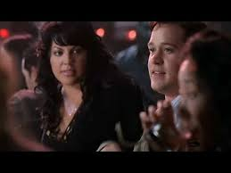
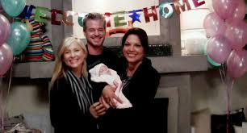

Tudo Sobre Callie Torres
Callie Torres é apresentada como uma residente de cirurgia ortopédica com uma queda pelo interno George O'Malley (T.R. Knight). Os dois começam um relacionamento e Torres se muda para a casa de Meredith (Meredith e Izzie Stevens também moraram lá). Incomodada pelo modo como o relacionamento deles está progredindo, O'Malley a confronta, o que resulta em sua mudança para um hotel. No rescaldo do rompimento, ela conhece e tem uma noite com o cirurgião plástico Mark Sloan (Eric Dane), que se torna seu amigo. Torres e O'Malley subsequentemente se reconciliam, e os dois se casam em Las Vegas no calor do momento. Confuso, O'Malley confidencia à colega interna Izzie Stevens (Katherine Heigl), sobre seus problemas de relacionamento com o álcool, levando a um encontro sexual bêbado entre os dois. Torres permanece inconsciente de seu encontro sexual, mas se torna cada vez mais desconfiada e anuncia seu desejo de conceber um filho. Pouco tempo depois, no entanto, ela descobre que O'Malley foi infiel, terminando seu casamento. Embora sua vida pessoal seja problemática, Torres vive profissionalmente quando é nomeada como Residente Chefe do hospital. No entanto, ela logo começa a lutar para lidar com o papel e é rebaixada logo em seguida.
Torres faz amizade com Erica Hahn (Brooke Smith), a nova chefe do hospital de cirurgia cardiotorácica. As duas embarcam em um relacionamento quando Hahn, brincando, beija Torres em um elevador para provocar Sloan. Nenhuma das duas esteve com outra mulher antes, e Torres luta com sua bissexualidade e a trai com Sloan. Ela é inicialmente perdoada, mas depois de uma discussão sobre o trabalho, Hahn renuncia de Seattle Grace, terminando seu relacionamento. A nova cirurgiã pediátrica Arizona Robbins (Jessica Capshaw) a beija e elas começam a namorar. Seu relacionamento é testado quando Torres sai com seu pai, Carlos, que a renega, cortando-a financeira e emocionalmente. Quando ela não é concedida uma posição como um médico assistente, ela repreende publicamente o chefe, Richard Webber, e renuncia de seu cargo. Ela começa a trabalhar no vizinho hospital Mercy West e, quando os dois hospitais se fundem, ela é promovida a um cirurgião assistente. O pai de Torres retorna mais uma vez para condená-la, mas acaba aceitando sua sexualidade. Quando Torres explica seu desejo de ter filhos, Robbins expressa desapontamento, e suas posições divergentes sobre o assunto os levam a se separar. Logo depois, um atirador comete assassinato em massa no hospital e, aliviado por ter sobrevivido, Torres e Robbins se reconciliam, com Robbins concordando que elas deveriam ter filhos juntas.

Quando Robbins ganha uma concessão de prestígio para ajudar a tratar crianças no Malawi, uma descontente Torres concorda em se mudar para lá com ela, pois a posição durará três anos; no entanto, sua falta de entusiasmo faz com que Robbins termine seu relacionamento e vá sem ela. Com o coração partido Torres vai até Sloan, e eles têm uma noite só. Robbins retorna para Torres, se desculpando e esperando perdão, mas Torres inicialmente a rejeita, e depois revela que ela está grávida do bebê de Sloan. Robbins concorda em criar o filho com ela, mas não gosta que o Sloan seja uma parte permanente de suas vidas. A caminho de uma escapada de fim de semana, Robbins propõe a Torres, mas antes que Torres possa responder, as duas estão em uma colisão frontal com um caminhão, deixando Torres gravemente ferida. Na tentativa de salvar sua vida, Addison Montgomery (Kate Walsh), entrega o bebê prematuro de Torres. Torres sobrevive e concorda em se casar com Robbins. Após doze semanas de recuperação, tanto Torres quanto o bebê Sofia recebem alta e podem sair do hospital. Torres se recupera de sua cirurgia, mas lida com a reação de sua mãe (Gina Gallego) em relação ao casamento e sua neta. Torres e Robbins se casam em um jardim depois que a esposa do ministro fica doente, com o cirurgiã geral Miranda Bailey (Chandra Wilson), oficiando a cerimônia.
No rescaldo de um acidente de avião que matou Sloan e Lexie Grey (Chyler Leigh), Torres é forçada a tomar a decisão de deixar Alex Karev amputar a perna esquerda de Robbins para mantê-la viva, o que coloca tensões sobre seu relacionamento. O hospital é processado e, eventualmente, considerado culpado de negligência. Cada vítima, incluindo Robbins, Derek Shepherd (Patrick Dempsey), Meredith Gray (Ellen Pompeo), e Cristina Yang (Sandra Oh ) deve receber US $ 15 milhões em indenizações, o que leva o hospital a uma quase falência, já que os seguros se recusam a pagar. Esses médicos e Torres compram o hospital com a ajuda da Harper-Avery Foundation para evitar que ele feche, e cada um se torna membro da nova diretoria. Tudo parece correr bem para o Arizona e Callie, até que uma grande tempestade atinge o hospital, agora com o nome de Mark Sloan e Lexie Gray. No último episódio da nona temporada, o Arizona trai Callie com a Dra. Lauren Boswell (Hilarie Burton). Callie logo descobre a infidelidade do Arizona ao ver seu anel de casamento pregado na bainha do Dra. Boswell. Após a descoberta, tanto Callie quanto Arizona compartilham seus sentimentos e é revelado que o Arizona não perdoa Callie por ter feito a chamada para amputar sua perna. Callie está de coração partido e Arizona afirma que Callie não perdeu nada no acidente, ao que Callie responde que ela, aparentemente, perdeu a Arizona.
Callie leva Sofia para morar com Meredith e Derek, Zola e o bebê Bailey por um tempo antes de expulsar Arizona de seu apartamento e comemora dançando de calcinha. Callie também deixou o Arizona em terapia, dizendo a ela que ela era a única que precisava ir. Depois de ser atingida por um processo, seu pai, Carlos, visita e diz a Callie que ele traiu sua mãe, mas ela o levou de volta e Callie não estaria aqui se sua mãe não desse uma segunda chance a Carlos. Callie vai ao apartamento do Arizona e a convida para voltar para casa. Callie descobre durante a cirurgia que o Arizona estava dormindo com Leah, uma residente do segundo ano, enquanto estava separada. Embora com raiva da Arizona, Callie ainda concorda em resolver as coisas.


Depois do fracasso do casamento de abril com Matthew, Callie e Arizona compraram uma casa juntas, um novo começo, longe das lembranças de seu apartamento. Mais tarde, decidiram tentar novamente um segundo filho. No entanto, uma viagem levou à descoberta de que Callie tinha desenvolvido aderências em seu útero nos anos desde o nascimento de Sofia, o que significa que ela não poderia mais ter bebês. Depois de conversar sobre o assunto, o casal concordou em adiar o sonho de ter outro bebê até estarem mais sólidos como casal.
No início da décima primeira temporada, Callie e Arizona deram à terapia outra chance para ajudar a consertar o casamento. Elas foram feitas para ir 30 dias vivendo vidas separadas na mesma casa sem atividade sexual com os outros ou uns aos outros. Elas chegaram perto de quebrar essa regra e tiveram que começar de novo e antes que os 30 dias terminassem, elas finalmente cederam e se conectaram sexualmente novamente. No final dos 30 dias da última sessão de terapia, Arizona percebeu que não poderia viver sem Callie; no entanto Callie não sentiu o mesmo e afirmou que se sentia sufocada e, eventualmente, saiu da terapia, terminando seu casamento.
Callie, em seguida, continua a namorar Penny, que era a residente responsável pelo caso de Derek Shepard. Ela vem para um jantar oferecido por Meredith, que a reconhece. Descobriu-se então que Penny vai trabalhar no Grey Sloan Memorial. Quando todos, incluindo Callie, descobrem quem Penny realmente é, eles protestam e tentam tirá-la da linha de residência do Grey Sloan Memorial. Ela consegue ficar na linha apesar de todos os pedidos e desejos dos outros.
Depois que Callie revela seu desejo de se mudar para Nova York com Penny e levá-la com sigo sua filha e de Arizona, Sofia, Arizona leva Callie ao tribunal para a custódia exclusiva. Callie perde a custódia de sua filha para o Arizona e Penny se muda para Nova York. Depois que o Arizona decide que ambas as mães de Sofia merecem ser felizes, Arizona oferece a Callie passagens de avião e oferece um acordo de custódia que mantém Sofia em Seattle durante o verão e depois compartilha com ela todos os outros anos letivos e Natal.
Callie é referenciada ocasionalmente pela Arizona e Sofia depois de sua partida do show. No final da temporada 14, Arizona sai do show para se mudar para Nova York e está implícito que as duas acabarão por se reconciliar depois que Callie e Penny forem desmembrados.